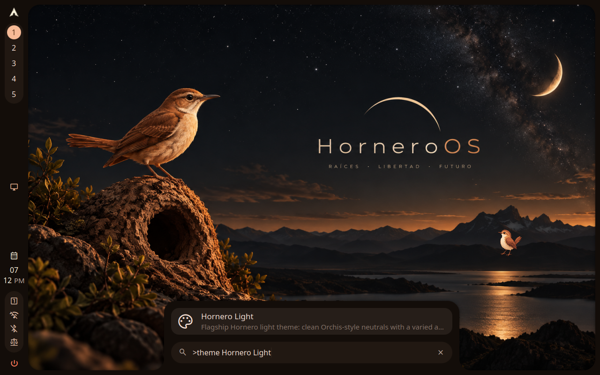
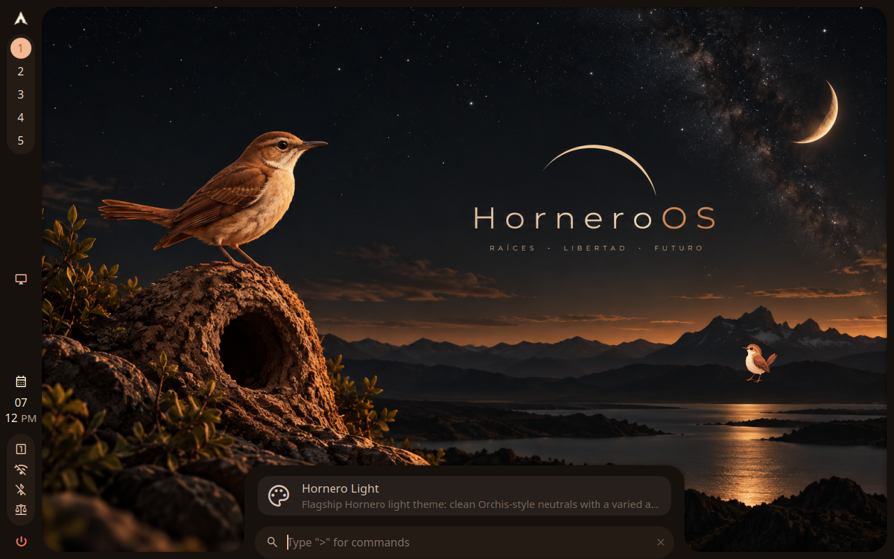
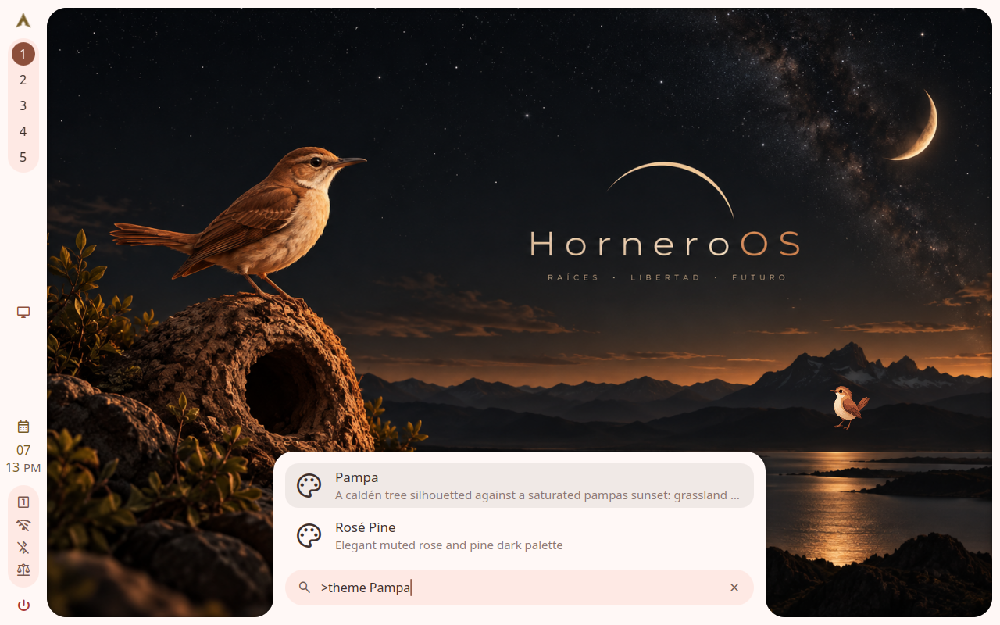
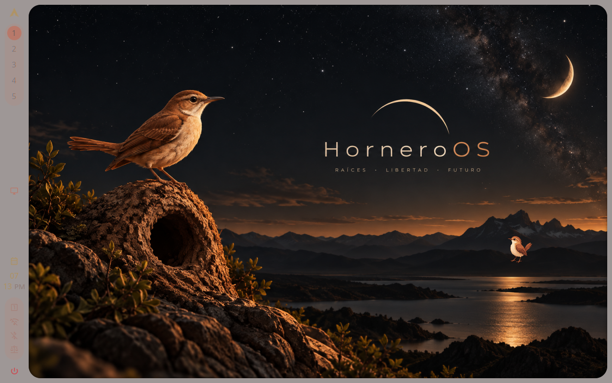
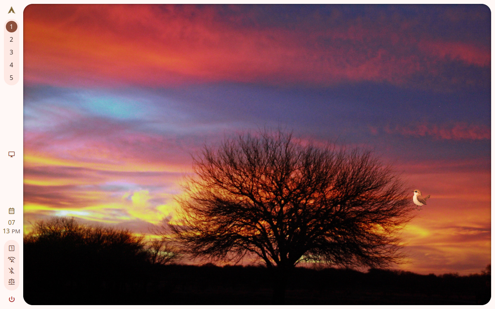

themes/package-only-flagships PASS
20261024T191126Z-themes-package-only-flagships-1 · attempt 1 · 128.734 s · class -
Reason: all proof checks passed
Instruction
Search for Hornero Light in the launcher and apply it. Then search for Pampa and apply it. Inspect both results and return to Hornero Light.
Proof
| where | kind | note | detail | |
|---|---|---|---|---|
| ✅ | step 0 | probe | ok | |
| ✅ | step 1 | probe | ok | |
| ✅ | step 4 | probe | ok | |
| ✅ | step 9 | probe | ok | |
| ✅ | step 13 | probe | ok | |
| ✅ | step 18 | probe | ok | |
| ✅ | step 20 | probe | ok | |
| ✅ | step 21 | probe | ok | |
| ✅ | step 24 | probe | ok | |
| ✅ | step 28 | probe | ok | |
| ✅ | proof 0 | probe | ok | |
| ✅ | proof 1 | probe | ok | |
| ✅ | proof 2 | probe | ok | |
| ✅ | proof 3 | probe | rc=0 | |
| ✅ | proof 4 | screenshot | ["005-final.png"] |
Product and environment
| shell_sha | 248f0c9dd020f5b83bad71503ecc488a6d0d6857 |
|---|---|
| config_sha | 64557c05ecf368fb3d5ed6ced69bc5e05901edbe |
| horneroctl | horneroctl horneroctl-v0.2.0-preview30-4-g78ff5f4 (78ff5f4) |
| horneroctl_sha256 | 269687cbf66666c7a33ebdaa82bafdf4b912e666405c44b7a9e42173af85f877 |
| engine | native |
| compositor | hyprland |
| hornero_qa | 0.1.0 |
| host_kernel | 7.2.9-arch1-1 |
| qemu | QEMU emulator version 11.1.2 |
| image | preview20-core78ff-shell248f0c9.qcow2 |
| outputs | 1 |
| resolution | 1280x800 |
Screenshots











Actions
{"t": 18.991, "kind": "ready", "serial": []}
{"t": 39.839, "kind": "setup", "run": "rm -rf \"$HOME/.local/share/hornero/themes\" \"$HOME/.local/share/hornero/wallpapers\" \"$HOME/.local/share/dots/themes\" \"$HOME/.local/share/dots/wallpapers\"", "rc": 0, "stdout": "", "stderr": ""}
{"t": 70.488, "kind": "probe", "step": 0, "value": {"run": "test ! -e \"$HOME/.local/share/hornero/themes\" && test ! -e \"$HOME/.local/share/dots/themes\" && test ! -e \"$HOME/.local/share/hornero/wallpapers\" && test ! -e \"$HOME/.local/share/dots/wallpapers\" && echo no-user-catalogue", "equals": "no-user-catalogue"}, "note": null}
{"t": 70.762, "kind": "probe", "step": 1, "value": {"run": "horneroctl appearance theme list --full --json | jq -er '.message | fromjson | any(.[]; .id == \"hornero-light\") and any(.[]; .id == \"pampa\")'", "equals": "true"}, "note": null}
{"t": 70.943, "kind": "key", "step": 2, "value": "ctrl+space", "note": null}
{"t": 71.272, "kind": "wait", "step": 3, "value": {"changed": true, "stable": 0.4, "timeout": 8}, "note": null}
{"t": 79.476, "kind": "wait_result", "step": 3, "ok": false}
{"t": 79.476, "kind": "probe", "step": 4, "value": {"run": "qs ipc call drawers state launcher", "equals": "true", "retry_s": 3}, "note": null}
{"t": 79.819, "kind": "type", "step": 5, "value": ">theme Hornero Light", "note": null}
{"t": 80.85, "kind": "wait", "step": 6, "value": {"changed": true, "stable": 0.5, "timeout": 8}, "note": null}
{"t": 89.126, "kind": "wait_result", "step": 6, "ok": false}
{"t": 89.126, "kind": "screenshot", "step": 7, "value": "package-only-hornero-light-search", "note": null}
{"t": 89.469, "kind": "key", "step": 8, "value": "enter", "note": null}
{"t": 89.776, "kind": "probe", "step": 9, "value": {"run": "horneroctl appearance theme get", "contains": "hornero-light", "retry_s": 20}, "note": null}
{"t": 90.01, "kind": "screenshot", "step": 10, "value": "package-only-hornero-light", "note": null}
{"t": 90.265, "kind": "key", "step": 11, "value": "ctrl+space", "note": null}
{"t": 90.629, "kind": "wait", "step": 12, "value": {"changed": true, "stable": 0.4, "timeout": 8}, "note": null}
{"t": 98.835, "kind": "wait_result", "step": 12, "ok": false}
{"t": 98.836, "kind": "probe", "step": 13, "value": {"run": "qs ipc call drawers state launcher", "equals": "true", "retry_s": 3}, "note": null}
{"t": 99.174, "kind": "type", "step": 14, "value": ">theme Pampa", "note": null}
{"t": 99.869, "kind": "wait", "step": 15, "value": {"changed": true, "stable": 0.5, "timeout": 8}, "note": null}
{"t": 108.211, "kind": "wait_result", "step": 15, "ok": false}
{"t": 108.211, "kind": "screenshot", "step": 16, "value": "package-only-pampa-search", "note": null}
{"t": 108.453, "kind": "key", "step": 17, "value": "enter", "note": null}
{"t": 108.747, "kind": "probe", "step": 18, "value": {"run": "horneroctl appearance theme get", "contains": "pampa", "retry_s": 30}, "note": null}
{"t": 109.731, "kind": "screenshot", "step": 19, "value": "package-only-pampa", "note": null}
{"t": 110.012, "kind": "probe", "step": 20, "value": {"run": "horneroctl --json appearance theme get | jq -er '[.data.id,.data.mode,.data.gtk_theme,.data.icon_theme,.data.gtk_color_scheme] | join(\"|\")'", "equals": "pampa|dark|Hornero-Pampa|Papirus-Dark|prefer-dark", "retry_s": 10}, "note": null}
{"t": 110.202, "kind": "probe", "step": 21, "value": {"run": "horneroctl wallpaper current", "contains": "/usr/share/hornero/wallpapers/pampa/pampa-01.jpg"}, "note": null}
{"t": 110.506, "kind": "key", "step": 22, "value": "ctrl+space", "note": null}
{"t": 110.911, "kind": "wait", "step": 23, "value": {"changed": true, "stable": 0.4, "timeout": 8}, "note": null}
{"t": 119.138, "kind": "wait_result", "step": 23, "ok": false}
{"t": 119.138, "kind": "probe", "step": 24, "value": {"run": "qs ipc call drawers state launcher", "equals": "true", "retry_s": 3}, "note": null}
{"t": 119.347, "kind": "type", "step": 25, "value": ">theme Hornero Light", "note": null}
{"t": 120.433, "kind": "wait", "step": 26, "value": {"changed": true, "stable": 0.5, "timeout": 8}, "note": null}
{"t": 125.581, "kind": "wait_result", "step": 26, "ok": true}
{"t": 125.582, "kind": "key", "step": 27, "value": "enter", "note": null}
{"t": 126.015, "kind": "probe", "step": 28, "value": {"run": "horneroctl appearance theme get", "contains": "hornero-light", "retry_s": 20}, "note": null}
Logs: logs/ · machine-readable: run.json, result.json, assertions.json, actions.jsonl